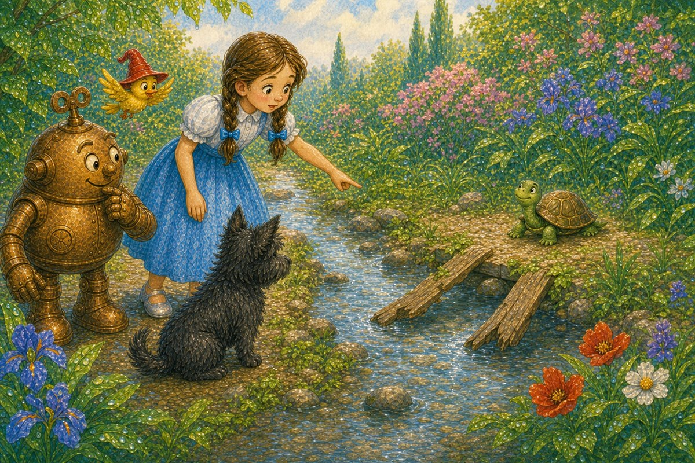
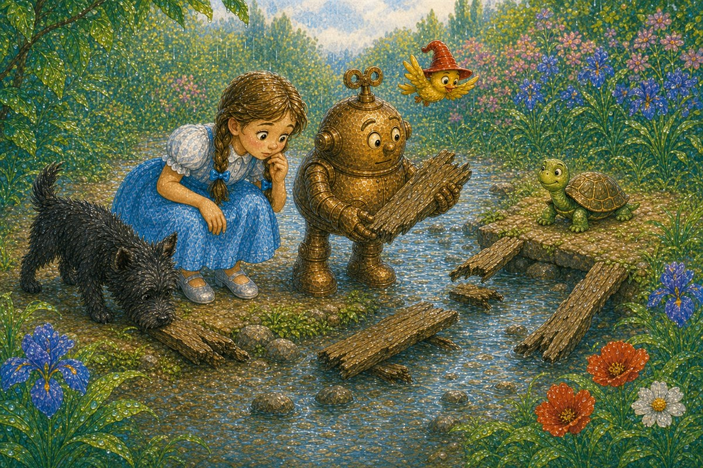
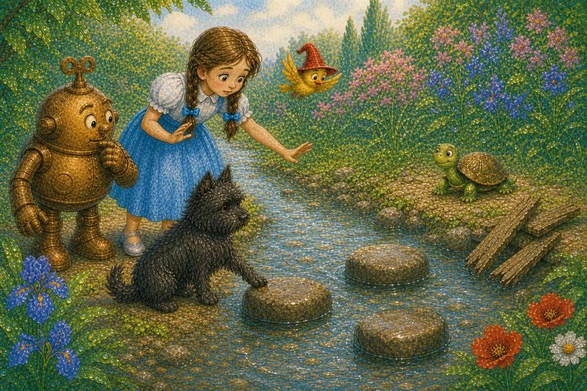
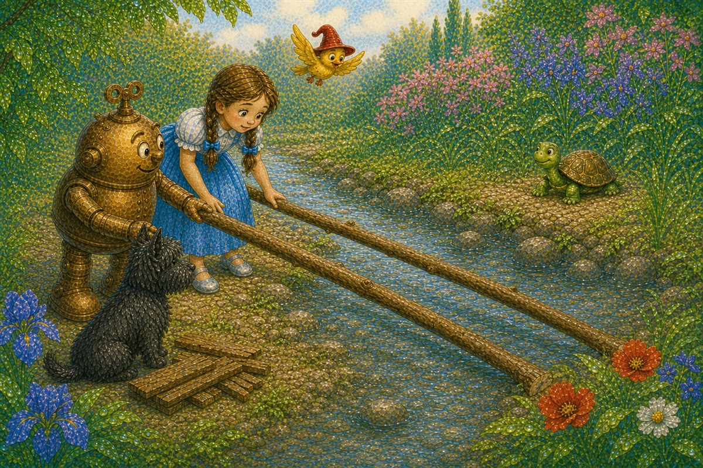
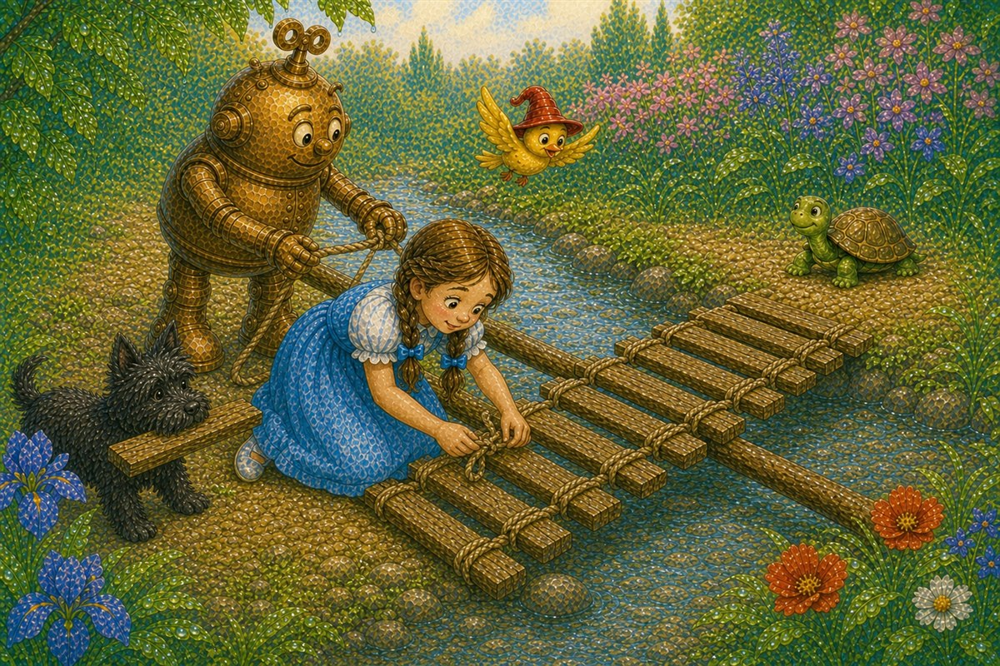
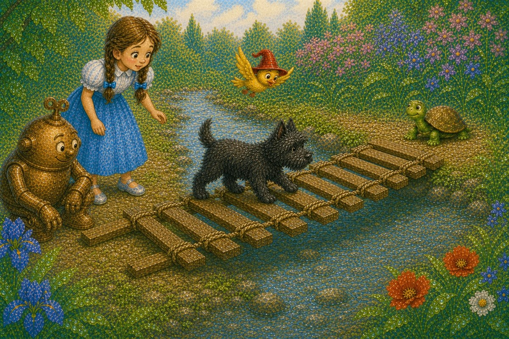
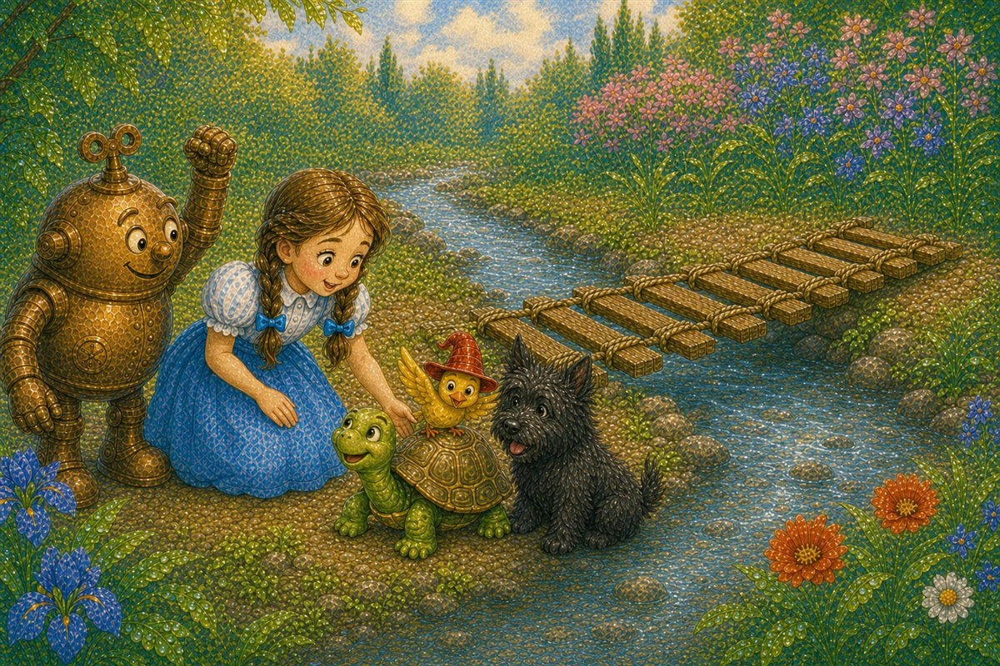

Pahina 1
Naglakad sina Dorothy, Toto, at Tik-Tok sa tabi ng ilog.
Kasama nila ang maliit na ibon.
Maliwanag ang araw.
Isang bagong kuwento sa Lupain ng Oz
Basahin ang tatlong bagong pahina bawat araw. Bago magpatuloy, balikan muna ang mga pahinang nabasa na.

Naglakad sina Dorothy, Toto, at Tik-Tok sa tabi ng ilog.
Kasama nila ang maliit na ibon.
Maliwanag ang araw.
Biglang tumigil si Toto.
May maliit na pagong sa kabilang tabi ng ilog.
Gusto nitong tumawid.
Pero wala nang tulay.

Nasira ang lumang tulay dahil sa malakas na ulan.
Nasa tubig ang ilang piraso ng kahoy.
“Paano tatawid ang pagong?” tanong ni Dorothy.
Humanap si Dorothy ng mahabang sanga.
Inilagay niya ito sa ibabaw ng tubig.
Pero masyadong maikli ang sanga.
Hindi ito umabot sa kabilang tabi.

Nagdala si Tik-Tok ng tatlong bato.
“Maaari nating gawing tulay ang mga bato.”
Pero madulas ang mga bato.
Hindi ligtas para sa pagong.
Umupo sila sa tabi ng ilog.
Tumingin sila sa kahoy at lubid.
“Kailangan natin ng matibay na tulay,” sabi ni Dorothy.

May naisip si Tik-Tok.
Inilagay niya ang dalawang mahabang sanga sa ibabaw ng ilog.
Umabot ang mga ito sa kabilang tabi.
Nagdala si Toto ng maliliit na piraso ng kahoy.
Isa-isa nilang inilagay ang mga ito sa ibabaw ng mga sanga.

Itinali ni Dorothy ang kahoy gamit ang lubid.
Hinigpitan ni Tik-Tok ang bawat tali.
“Matibay na!” sabi ni Tik-Tok.

“Subukan muna natin,” sabi ni Dorothy.
Maingat na lumakad si Toto sa tulay.
Hindi ito gumalaw.
Bumalik si Toto at masayang tumahol.
Dahan-dahang tumawid ang maliit na pagong.
Nasa gitna na ito.
Pagkatapos, nakarating ito sa kabilang tabi.
“Ligtas na ang pagong!” sabi ni Dorothy.

Masaya ang pagong.
Masaya rin ang magkakaibigan.
Dumaloy ang tubig sa ilalim ng munting tulay.
Lumipad ang ibon sa itaas.
Tumawa silang lahat.
Pag-usapan natin